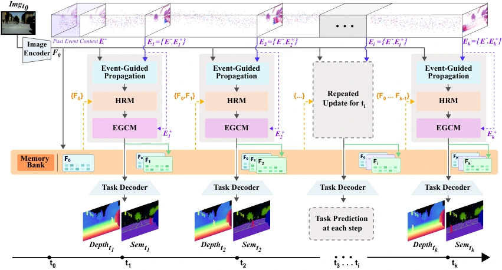
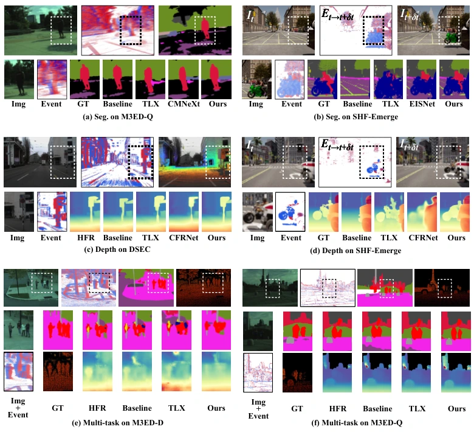

Overview
LiFR v2 supports causal anytime and streaming segmentation, depth and joint prediction. An Event-Guided Completion Module addresses regions missing from the RGB keyframe; a History Retrieval Module reuses completed features. SHF-Emerge tests rapid emergence and disocclusion.
Method
Beyond propagation alone.
Propagation
Transport reliable RGB-derived features with scene motion.
Completion
Recover event-supported content absent from the keyframe.
Retention
Preserve completed representations for subsequent queries.


Results
Recovering newly visible content.
| Task | Baseline | Baseline score | LiFR v2 |
|---|---|---|---|
| Segmentation ↑ | LiFR-Seg | 54.28 | 56.13 |
| Depth ↓ | LiFR propagation | 1.564 | 1.118 |
SHF-Emerge, single-task evaluation. Tables I–II. Segmentation is mIoU (%); depth is 1–10 m RMSE (m). These are different task-specific models.
Read the experimental protocol ↗

BibTeX
@misc{wan2026lifrv2,
title = {LiFR v2: Completion-Augmented Event Propagation for High-Rate Dense Prediction},
author = {Tao Wan and Xiaoshan Wu and Yifei Yu and Bo Wang and Xiaoyang Lyu and Muxin Liu and Aoxuan Pan and Zhongrui Wang and Xiaojuan Qi},
year = {2026},
eprint = {2609.25803},
archivePrefix = {arXiv},
primaryClass = {cs.CV},
url = {https://arxiv.org/abs/2609.25803}
}The public repository currently hosts paper materials; its README says code and pretrained models are being prepared.